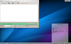
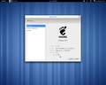
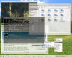

Componentes
Entorno gráfico
GNU/Linux puede funcionar tanto en entorno gráfico como en modo consola. La consola es común en distribuciones para servidores, mientras que la interfaz gráfica está orientada al usuario final, tanto de hogar como empresarial. Asimismo, también existen los entornos de escritorio, que son un conjunto de programas conformado por ventanas, iconos y muchas aplicaciones que facilitan la utilización del ordenador.
Los escritorios más populares en GNU/Linux son: GNOME, KDE, LXDE, Xfce, [Unity](https://www.google.com/url?q=https://es.wikipedia.org/wiki/Unity_(entorno_de_escritorio)&sa=D&ust=1509364089106000&usg=AFQjCNGwjaTbMmUz4_53rn_C1sMo5eqL_w), MATE y Cinnamon.

Escritorio KDE SC 4.10

Escritorio GNOME 3.0

Escritorio XFCE 4.4
Escritorio LXDE 0.5
Como sistema de programación
La colección de utilidades para la programación de GNU es con diferencia la familia de compiladores más utilizada en este sistema operativo. Tiene capacidad para compilar C, C++, Java, Ada, Pascal, Python, Perl, entre otros muchos lenguajes. Además soporta diversas arquitecturas mediante la compilación cruzada, lo que hace que sea un entorno adecuado para desarrollos heterogéneos.
Hay varios entornos de desarrollo integrados disponibles para GNU/Linux incluyendo Sublime, Atom y Visual Studio Code. También existen editores como Emacs o Vim. GNU/Linux también dispone de capacidades para lenguajes de guion (script), aparte de los clásicos lenguajes de programación de shell, o el de procesado de textos por patrones y expresiones regulares conocido como awk, la mayoría de las distribuciones tienen instalado Python, Perl, PHP y Ruby.
Aplicaciones de usuario
Las aplicaciones para GNU/Linux se distribuyen principalmente en los formatos .deb y .rpm, los cuales fueron creados por los desarrolladores de Debian y Red Hat respectivamente. También existe la posibilidad de instalar aplicaciones a partir de código fuente en todas las distribuciones.
Software de código cerrado para GNU/Linux
Durante la primera época había pocas aplicaciones de código cerrado para GNU/Linux. Con el tiempo se fueron uniendo programas no libres al sistema GNU/Linux, entre ellos Adobe Reader, Adobe Flash, Opera, entre otros.